plot(mtcars$wt, mtcars$mpg,
xlab = "Weight",
ylab = "Miles per gallon",
main = "Simple plot of mtcars")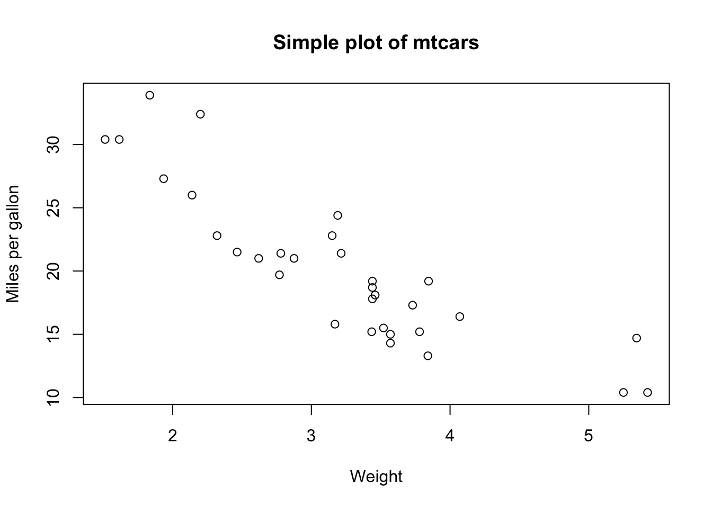
This guide documents the steps I took to set up and manage a project using Git, GitHub, and the command line. For each step I explain what I did and why, to show my understanding of how these tools work.
example.qmdI created a new RStudio Project and named it etc5513_assign2. Using an RStudio Project keeps all files organised in one place and ensures file paths are relative to the project folder.
Inside the project I created this file, example.qmd, and rendered it to HTML using the Render button in RStudio. This confirms the file works properly and can be reproduced:
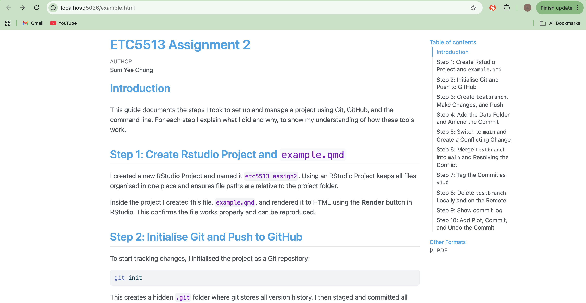
To start tracking changes, I initialised the project as a Git repository:
git initThis creates a hidden .git folder where git stores all version history. I then staged and committed all files:
git add .
git commit -m "create qmd file"Output:
git add . stages everything in the folder. git commit saves a snapshot with a message describing what was included.
Next, I renamed the branch to main, connected the repository to GitHub, and pushed:
git branch -M main
git remote add origin git@github.com:scho0107/ets5513_assign2.git
git push -u origin main git branch -M main renames the default branch to main. git remote add origin links the local repo to GitHub, and git push -u origin main uploads the commit and sets up tracking so future pushes work automatically.
The output confirmed that main was successfully pushed to GitHub and set up to track the remote branch:
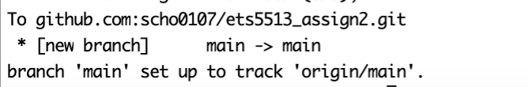
testbranch, Make Changes, and PushInstead of working directly on main, I created a new branch to keep changes isolated:
git switch -c testbranchI then edited example.qmd by adding a new section. I first ran git status to check what had changed, then staged and committed only the intended file:
git status
git add example.qmd
git commit -m "Add section on testbranch"
git push -u origin testbranchThe push output confirmed that testbranch was created on GitHub and set up to track the remote branch:
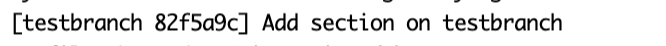
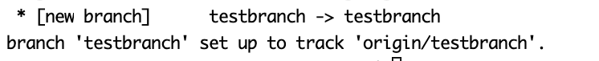
After committing, I added a data folder containing the dataset from Assignment 1. I created the folder, copied the CSV file in manually, and then amended the previous commit rather than creating a separate one:
mkdir data
git add data
git commit --amend --no-editgit commit --amend rewrites the last commit to include the newly staged files. --no-edit keeps the original commit message. The output confirmed that data/33234027_Sum Chong.csv was included in the amended commit.
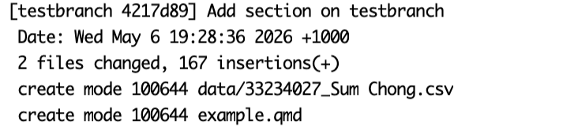
Because amending changes the commit hash, a normal push would be rejected. I used --force-with-lease instead of --force because it is safer — it checks that no one else has pushed to the branch since my last pull before overwriting it.
git push --force-with-lease origin testbranchThe terminal confirmed the branch was force updated:
main and Create a Conflicting ChangeI switched back to main and edited example.qmd in a different way to what I had done on testbranch, so that merging the two branches would produce a conflict:
git switch main
git add example.qmd
git commit -m "Edit example file on main"
git push origin mainOutput:
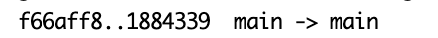
On testbranch, I added the following content:
# Test branch section
This section was added on testbranch.On main, I edited the same part of the file with different content:
# Conflict section
This sentence was written on the main branch.Because both branches modified the same lines differently, Git could not automatically merge them and produced a merge conflict.
testbranch into main and Resolving the ConflictI merged the branch:
git switch main
git merge testbranchGit detected a conflict and stopped:
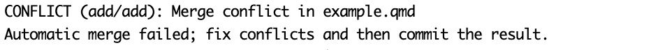
When I opened example.qmd, I could see the conflict markers:
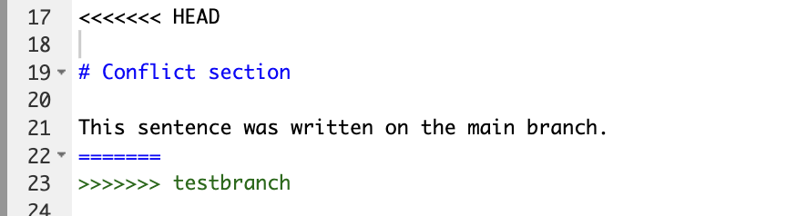
The section under <<<<<<< HEAD represents the content from the main branch. In this case, the corresponding section from testbranch does not contain any content in that location, which is why it appears empty. Git still reported a conflict because both branches modified the same part of the file differently, and it could not determine automatically whether to keep or remove the content. I resolved this by keeping the content from the main branch, removing the conflict markers, and completing the merge.
git add example.qmd
git commit -m "Resolve merge conflict between main and testbranch"
git push origin mainThe push output confirmed the merge was successfully uploaded to GitHub.
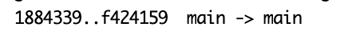
v1.0To mark this stable version of the project, I created an annotated tag:
git tag -a v1.0 -m "Version 1.0: project complete, merge conflict resolved"
git push origin v1.0The output confirmed the tag was pushed: * [new tag] v1.0 -> v1.0. Annotated tags store extra information such as the date and message, making them more useful than lightweight tags for marking milestones. Tags are not included in a regular git push, so I pushed it separately.
Output:
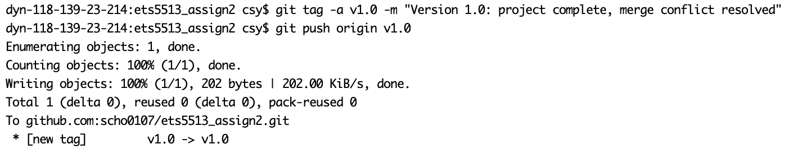
testbranch Locally and on the RemoteSince testbranch had been merged into main, I deleted it from both places:
git branch -d testbranch
git push origin --delete testbranchThe terminal confirmed: Deleted branch testbranch (was 4217d89) and - [deleted] testbranch. I used git branch -d (lowercase) because it checks the branch has been merged before deleting, which prevents accidental data loss.
Output:
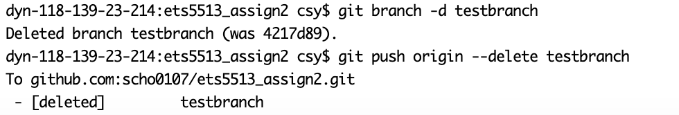
I checked the commit history using:
git log --onelineOutput:
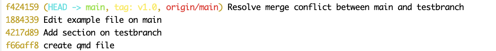
--oneline shows each commit on a single line with its short hash and message, giving a clear summary of everything that happened in the project.
I added a new section to example.qmd with a simple plot:
plot(mtcars$wt, mtcars$mpg,
xlab = "Weight",
ylab = "Miles per gallon",
main = "Simple plot of mtcars")
I then staged and committed the change:
git add example.qmd
git commit -m "Add simple plot to example file"To undo the commit without losing my changes, I ran:
git reset --soft HEAD~1
git statusgit reset --soft HEAD~1 removes the last commit from the history but keeps the changes staged, as confirmed by git status which showed example.qmd under “Changes to be committed”. This is useful when a commit needs to be revised without losing any work — since the changes remain staged, I can edit and recommit straight away without needing to run git add again.
Output:
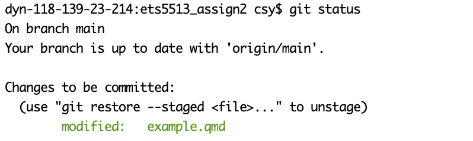
I used ChatGPT during this assignment to help me understand some Git and GitHub concepts that I was unsure about. I mainly used it to ask questions about commands such as git commit --amend --no-edit, git reset --soft HEAD~1, merge conflicts, and the difference between commands like git push --force and git push --force-with-lease.
I also used ChatGPT to help me improve some of the wording in my explanations and to check whether my explanations were clear enough for the assignment.
All Git commands, repository changes, commits, branching, merge conflict resolution, screenshots, and GitHub updates were completed by me independently using the command line, GitHub, and RStudio. I checked and edited all explanations before including them in the final report.
A full record of my AI interaction is available here:
https://chatgpt.com/share/6a017fd8-70f0-83ec-956d-b1771e8121b7